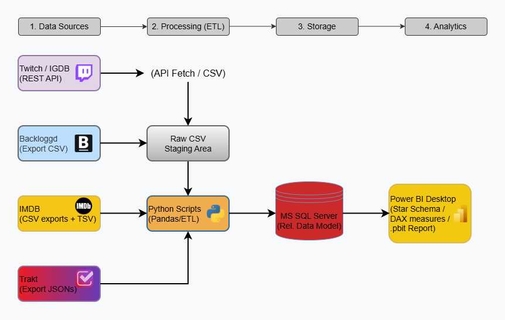
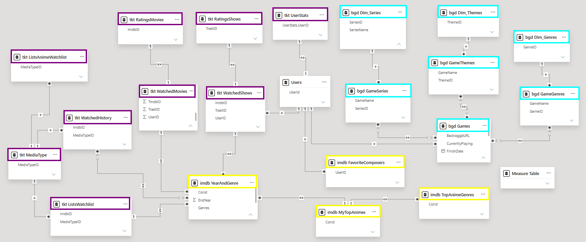
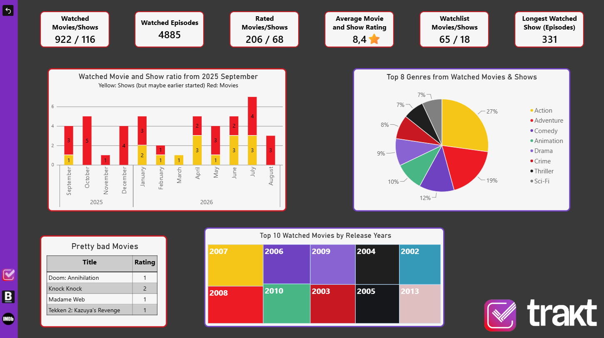
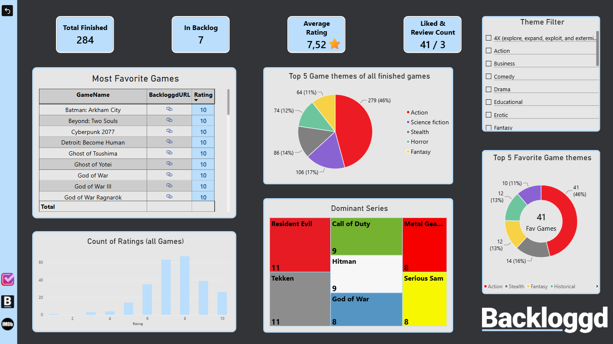
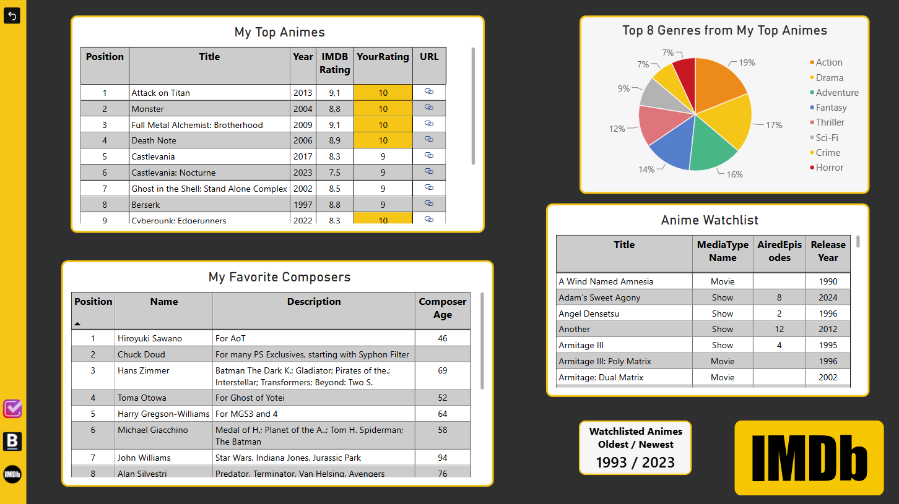

🎯 Purpose
The goal of this project is to centralize and harmonize fragmented personal entertainment tracking into a single, unified business intelligence solution. By consolidating data across disparate media platforms (films, series, and games), the project eliminates data silos and provides holistic, data-driven insights into consumption habits, preferences, and long-term rating patterns.
💡 Why Is It Useful?
- Unified Entertainment Hub: Entertainment trackers are typically siloed by medium. This project brings them together under a single dimensional model for seamless cross-media analytics.
- Deep Cross-Dimensional Analysis: Evaluates personal bias and rating trends across release years, normalizes delimited multi-genre tags, and tracks watch history and viewing consistency over time.
- Robust Data Engineering: Features a star/snowflake schema design with relational normalization in MS SQL Server, Power Query ETL pipelines, and advanced DAX modeling.
- Privacy-First & Template-Ready: Distributed with a sanitized, schema-only database backup and a .pbit file, allowing anyone to spin up the environment without exposing personal logs.
🔄 Architecture & Pipeline Flow
The data ingestion process extracts CSV and JSON exports from tracking sites and enriches video game data using the IGDB (Twitch) REST API via Python, before loading it into a normalized MS SQL Server staging environment.

📐 Data Model (Star Schema)
The Power BI semantic model is built on a highly optimized star/snowflake schema, handling complex one-to-many relationships (like comma-separated genres) to enable dynamic cross-filtering.

📊 Dashboard Views
Interactive reporting pages showcasing personal media consumption, custom DAX measures for weighted ratings, and genre distributions.



🚀 Build Your Own MediaTracker
Want to analyze your own gaming, movie, and series habits? I've made this project open-source and completely template-ready. Head over to the GitHub repository where you'll find the empty SQL database schema, the Power BI template file (.pbit), and a step-by-step guide to easily plug in your own exported data without exposing any personal logs!
View Repository & Instructions